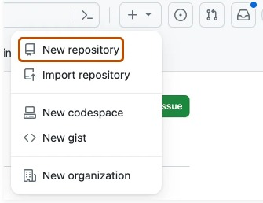
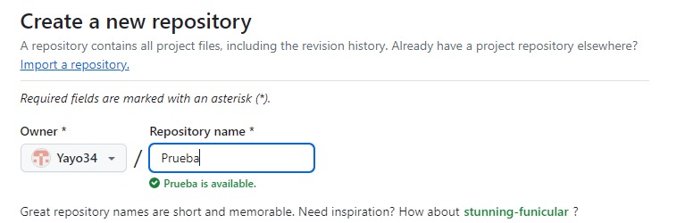
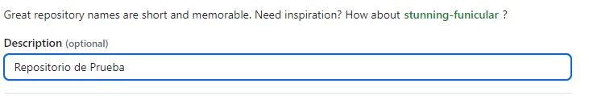
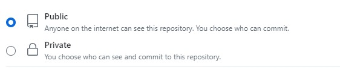
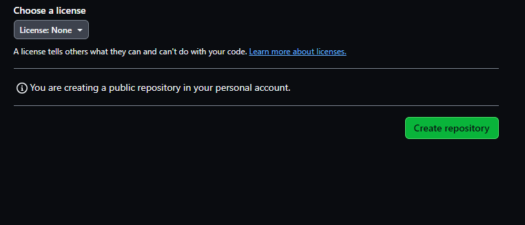

¿Cómo crear un repositorio de GitHub?
Crear un repositorio
1. En la esquina superior derecha de cualquier página, selecciona y luego haz clic en Nuevo repositorio.
2. Escriba un nombre corto y fácil de recordar para el repositorio.
3. Opcionalmente, puede agregar una descripción del repositorio
4. Elige la visibilidad del repositorio
5. Seleccione crear repositorio.
